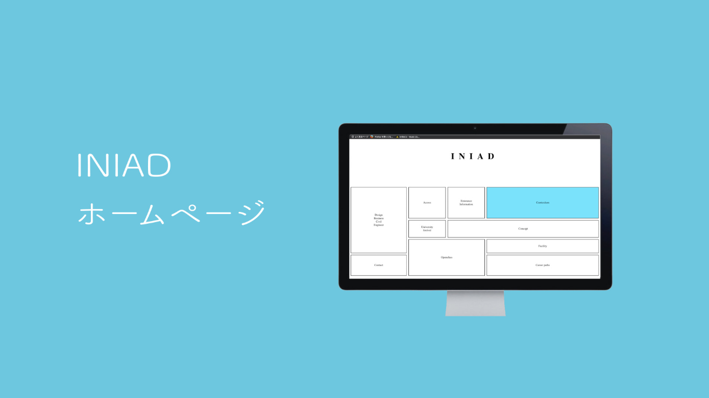
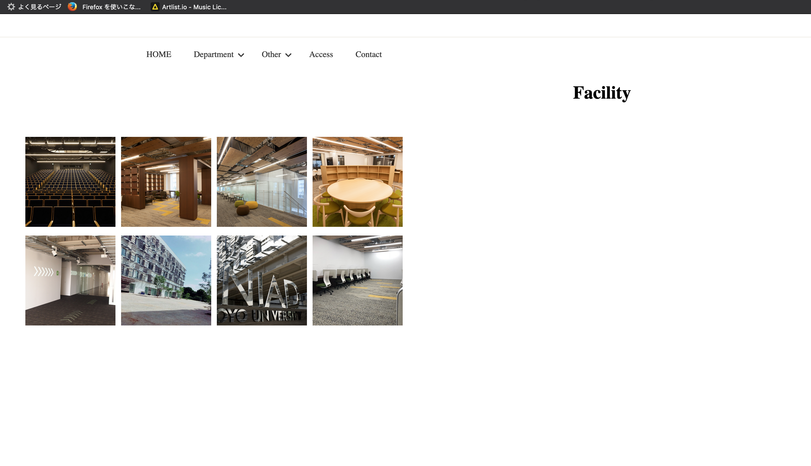
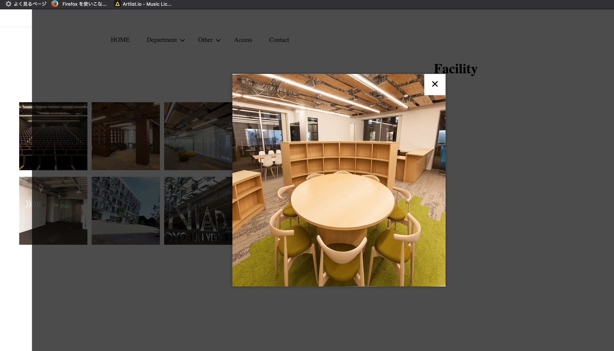
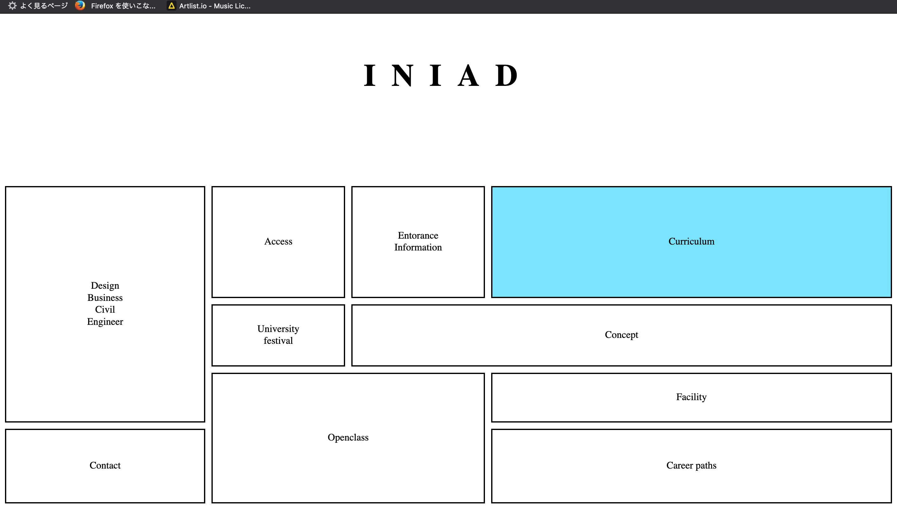
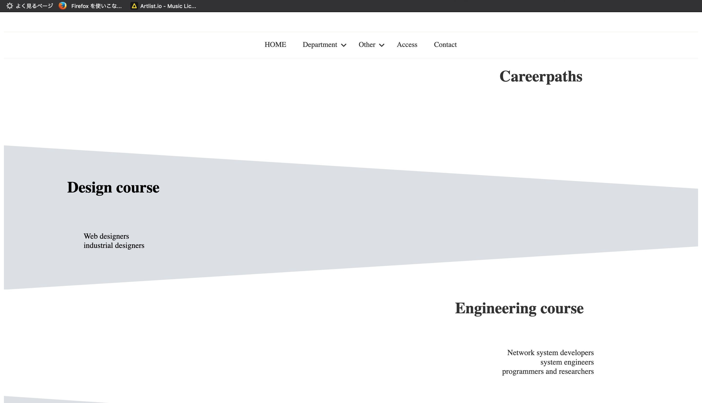
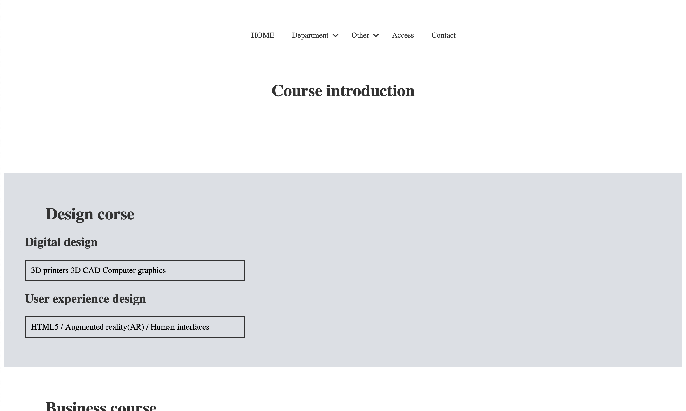
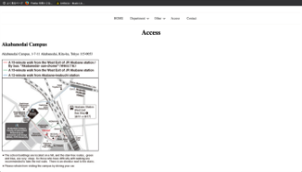

INIADsite

もう一つのWebサイト
作成時期 : 2019年05月
作成期間 : 企画から実装含め1週間
使用言語 : HTML5, CSS, JavaScript
ターゲット : 普段からパソコンを使用している優秀な学生, 英語が使える日本人学生や留学生
コンセプト : シンプルかつ色味を抑えたもの

参考サイトをもとにトップページを作成。マウスオーバー時に色を変更し、色は大学カラーを連想する色、さらに誰が見ても好感を持てるように幅広い年代から好まれている青系の色を使用。
外観・施設のページは人物が写っていない写真を利用するために既存サイト等から写真を引用。
また写真をクリック時に写真が拡大するように作成。トップページ以外のデザインは主に要素を斜めにした背景で統一。


主要な画面




© 2019 by HARUNA ICHIKAWA.